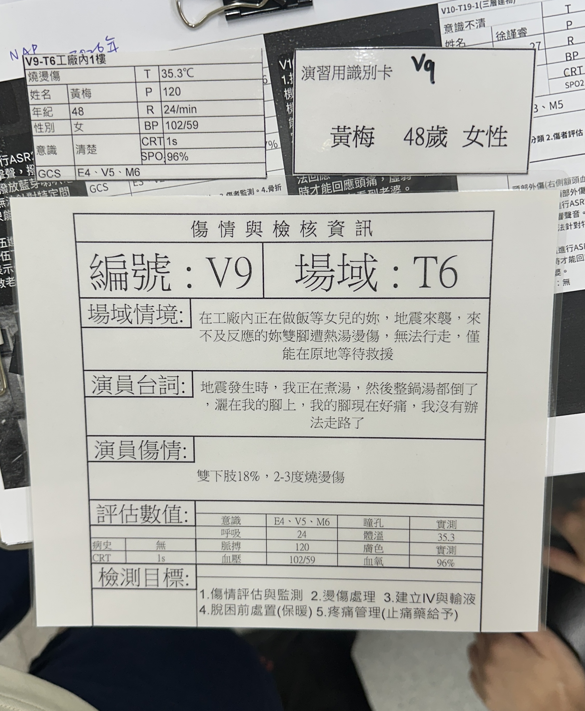
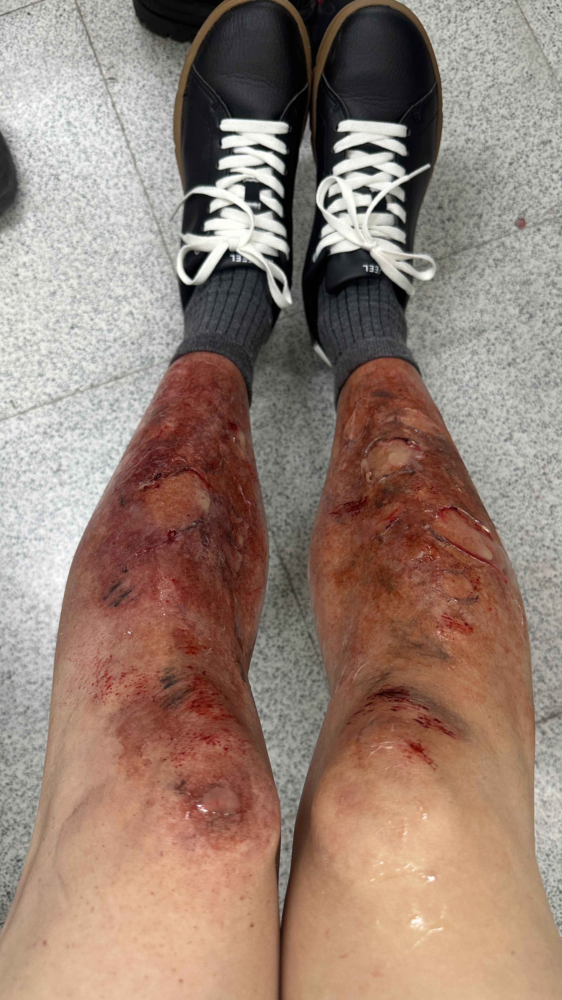

台灣到院前五級檢傷推動歷程
從民國 103 年的啟蒙交流，到 113 年正式全面施行，走過十年積累的制度建設之路。
🎯 本章學習目標
📅 推動里程碑時間軸
參訪日本到院前檢傷制度，開啟台灣引入五級檢傷構想。
委託台灣急診醫學會進行研究，建置急診五級檢傷量表試驗，並計劃開發到院前判斷 App。
消防署委託臺中市政府消防局進行試辦計畫；107/06/07 消防署正式把「推動到院前急診之一之到院前五級檢傷」列為四大策略之一；108 起將五級檢傷納入救護紀錄表評估項目。
110/11/27 消防署辦理第三屆年會正式啟航儀式；急診醫學會、台灣緊急救護指導醫師學會、中華民國急重症護理學會共同宣示。臺中市正式全面施行（113/1/1）。
112 年導入「救急救難一站通」五級檢傷輔助判斷系統；各縣市消防局完成 EMT 技術員教育訓練課程，完整建立系統性教材。
🚦 五級檢傷架構一覽（表 4-1）
| 級數 | 操作型定義 |
|---|---|
| 一級 急救危急 |
無法在救護現場進行穩定病人，且須進行緊急或緊急性急救處置者 |
| 二級 急危 |
急危處置病人者，或情況雖穩定，但短時間內可能會快速惡化者 |
| 三級 緊急 |
病情在短時間不會惡化，但現況需要緊急處置的醫療服務者 |
| 四級 次緊急 |
病情短時間不會惡化，況況不影響當日常態的急救醫療服務者 |
| 五級 非緊急 |
屬上述四級以上，但依嚴重程度可直接到醫療機構就醫者 |
檢傷分類方式
到院前五級檢傷採用 Prehospital TTAS，依年齡與「非外傷／外傷」分為四種量表。
📋 四種量表分類（表 4-2）
| 年齡層 | 分類 | 使用量表 |
|---|---|---|
| A（≥18 歲） | 非外傷 | 成人非外傷量表＊ |
| A（≥18 歲） | 外傷 | 成人外傷量表＃ |
| P（<18 歲） | 非外傷 | 兒童非外傷量表＊ |
| P（<18 歲） | 外傷 | 兒童外傷量表＃ |
＊包含細項的非外傷主訴名稱；＃包含部位別的外傷標準主訴名稱
🏥 非外傷（表 4-3）
分成 14 大類，包含 119 項標準主訴名稱，含「特殊情況」（確定或疑似性侵、家庭暴力）。
🩹 外傷（表 4-3）
分成 15 大類，含 46 項標準主訴名稱。分類方式有三種（受傷形式、受傷機轉、特殊情況）。
外傷標準主訴名稱的三種分類方式
適用於部分大分類名稱外在優勢者，如「頭部外傷」可再細分「頭部撕裂傷」及「頭部撕裂傷／損傷」。
包含昆蟲咬傷、海洋生物咬傷、動物咬傷、蛇咬傷、化學物質暴露、凍傷、電擊傷害及溺水等與環境有關之外傷。
即「一般或其他傷者」之「確定或疑似性侵」與「家庭暴力」。
到院前檢傷初判
五級檢傷的判斷流程，從「大分類」→「標準主訴」→「判定依據」逐步收斂到檢傷級數。
📌 判定依據結構
(首要+次要調節變數)
以「皮膚外傷：燙傷」為例：無意識 GCS(3-8) → 一級；2度3度 >25%體表面積 → 二級；2度3度 5-25% → 三級 ⋯
📋 表 4-4 檢傷級數量表範例（課本 P.96）
以「皮膚外傷：燙傷」為例，完整 17 項判定依據。標記 ＊ 為次要調節變數。
| 大分類名稱 | 標準主訴名稱 | 判定依據（首要或次要調節變數） | 檢傷 級數 |
次要 調節 變數 |
|---|---|---|---|---|
| 皮膚外傷 | 燙傷 | 重度呼吸窘迫（SpO₂ < 90%） | 1 | |
| 休克 | 1 | |||
| 無意識（GCS：3-8） | 1 | |||
| 中度呼吸窘迫（SpO₂ < 92%） | 2 | |||
| 血行動力搖擺不定 | 2 | |||
| 意識程度改變（GCS：9-13） | 2 | |||
| 2度3度 > 25% 體表面積 | 2 | ＊ | ||
| 手部／足部／顏面部／會陰部 2度或3度燙傷 | 2 | ＊ | ||
| 矽吸入性灼傷 | 2 | |||
| 輕度呼吸窘迫（SpO₂：92-94%） | 3 | |||
| 血壓或心跳處於病人之平常數值，但血行動力搖擺 | 3 | |||
| 急性周邊重度疼痛（8-10） | 3 | |||
| 2度3度 5-25% 體表面積 | 3 | ＊ | ||
| 急性周邊中度疼痛（4-7） | 4 | |||
| 2度3度 < 5% 體表面積 | 4 | ＊ | ||
| 急性周邊輕度疼痛（< 4） | 5 |
＊ 次要調節變數：凝血機能異常、疑似電解質異常、高血壓急症等特殊情況下，此項才會被啟動參考。
讀書會案例：V9 黃梅（T6 工廠）
對應判斷依據：2度3度 5-25% 體表面積（18%）＊
📋 傷情與檢核資訊（演習識別卡）
- 姓名
- 黃梅
- 年齡／性別
- 48 歲 女性
- 場域
- T6 工廠內 1 樓
- 場域情境
- 在工廠內正在做飯，地震來襲，雙腳遭熱湯燙傷，無法行走，僅能原地等待救援
- 演員台詞
- 「地震發生時，我正在煮湯，然後整鍋湯都倒了，灑在我的腳上，我的腳現在好痛，我沒有辦法走路了」
- 傷情
- 雙下肢 18%，2-3 度燒燙傷
評估數值

assets/img/v9-case-card.jpg

assets/img/v9-case-legs.jpg
🔍 為什麼是三級？判斷步驟拆解
- ✅ GCS 15（非 3-8，無意識）
- ✅ SpO₂ 96%（非呼吸衰竭）
- ✅ 血壓 102/59，有搏動（非休克）
- → 不符合危急個案
- ✅ SpO₂ 96%（非 <92%）
- ✅ 意識正常（GCS 非 9-13）
- ✅ 燙傷面積 18%（非 >25%）
- ✅ 非手部／足部（雙下肢）
- ✅ 非矽吸入性灼傷
- → 不符合二級條件
- ▶ 2度3度，5-25% 體表面積
- 雙下肢 18% → 符合三級＊
- 疼痛評估輔助確認：
- → 疼痛部位「周邊」（下肢）
- → 若 NRS 8-10 亦可到三級
- = 三級（緊急）
💡 若燙傷面積 > 25%，或同時波及手部、足部、顏面、會陰 → 直接升為二級（危急）
💡 初判重點
- ▪到院前五級檢傷使用電腦輔助設備或檢傷量表才能確認級數
- ▪檢傷三、四、五級急迫程度較低，可在現場初步確認
- ▪現場時間延誤 → 建議先直接判斷，不透過快速搜索
- ▪符合「危急個案」即初判為檢傷一級
- ▪非「危急個案」初判為「可能三至五級」
🚨 危急個案（直接判一級）
首要與次要調節變數
「首要調節變數」是病情危急程度的第一道判斷門，共六項，任一符合即決定初步檢傷級數。
🫁 呼吸
評估病人是否有呼吸窘迫現象。若有呼吸窘迫徵候，則需進一步評估呼吸窘迫程度，以決定「呼吸」這個首要調節變數的檢傷級數。
📌 次要調節變數的角色
次要調節變數標記於檢傷量表的「＊」符號，使用時機是：
- ▪對首要調節變數的補充（如血糖、高血壓急症）
- ▪該調節變數不加入一般首要調節變數（例如補充心臟血管系統），若未加入則不會因為高血壓而誤導判斷
- ▪「被選定之次要調節變數」可進一步影響分類（胸痛／胸痛、中風、吞嚥困難、肢體外傷）
⚠️ 特定主訴
適用於首要調節變數未能涵蓋的狀況，包含：
- • 懷孕問題大於 20 週
- • 心理健康（精神／行為急症）
注意：精神行為急症依照心理健康領域，並不適用「量化」指標（如生命徵象），因此不容易評估其危急程度。
次要調節變數
最終級數以所有判定的最高級數為準；次要調節變數（標記＊）是補充首要判定的輔助機制。
(一) 凝血機能異常與出血（表 4-8）
先天性凝血異常病患、重度肝病或長期服用抗凝血劑的病人若有出血，可能因凝血機能常導致大量出血的風險，需要快速介入治療。
| 檢傷級數判定依據 | 二級（危急） | 三級（緊急） |
|---|---|---|
| 適用對象 | 1. 先天性基礎異常者 2. 嚴重肝病者 3. 現正使用抗凝血劑者 |
|
| 適用狀況 | 所有有伴有關於的主訴以及任何伴有出血的非外傷性主訴 | |
| 項目（二級） | 頭部（腦內）＆頸部、胸部、腹部、骨盆與脊椎、大量或唱不出血、四肢的肌肉出血、骨骼或關節、深部的傷裂傷、任何無法控制的出血 | 中度或輕度的出血、鼻子（流血）、口腔（含牙齒）、輕微血血、皮膚及表膚裂傷值 |
(二) 血糖異常與檢傷分級（表 4-9）
| 條件 | 二級 | 三級 |
|---|---|---|
| 血糖 <60 mg/dL 或顯示 "Low" |
伴隨：混亂、冒汗、虛弱、顫抖 任一症狀 | 無前述症狀 |
| 血糖 >324 mg/dL 或顯示 "High" |
伴隨：呼吸喘難、脫水、虛弱 任一症狀 | 無前述症狀 |
(三) 高血壓急症與檢傷分級（表 4-10）
高血壓部分因無法判定對主訴的因果關係，故將高血壓區塊作為獨立主訴項目（歸於心臟血管系統），不加入一般首要調節變數。
| 狀況 | 二級 | 三級 | 四級 |
|---|---|---|---|
| 有任一症狀 | SBP≥220 DBP≥130 |
SBP 200-220 DBP 110-130 |
SBP 200-220 DBP 110-130 |
| 無症狀 | SBP≥220 DBP≥130 |
SBP 200-220 DBP 110-130 |
(四) 被選定之次要調節變數（P.102）
包括胸腔／胸痛、中風症狀、吞嚥困難／喉嚨痛以及肢體外傷。有助於確定首要調節變數可能不足以分辨的外傷等級。
| 主訴類別 | 一級 | 二級 | 三級 |
|---|---|---|---|
| 胸悶／胸痛 | — | 急性撕裂性胸痛 | — |
| 中風症狀 | — | 症狀發作 <6 小時 | 症狀發作 ≥ 6 小時 |
| 吞嚥困難／喉嚨痛 | — | 流口水、喘鳴、聲音或近不下去 | 無上述症狀 |
| 肢體外傷 | — | 1. 股骨骨折 2. 開放性骨折 |
其他閉鎖性骨折 |
到院前五級檢傷程序
採用「三級檢傷」與「五級檢傷」兩模式，先判斷「危急個案」再逐步確認三至五級。
圖 4-4 到院前檢傷程序（P.104）
之檢傷二級狀況？
使用分級量表或檢傷輔助工具搜索
檢傷狀況
採用急診一致的五級檢傷框架之效益
- 急診五級檢傷效能已獲肯定
- 急診五級檢傷成為衛生福利部公告，具公信力，可避免民眾質疑
- 救護技術員與急診護護人員可在此共同語言下進行聯繫與溝通
- 急診五級檢傷所提供之再評估時間可作為縣市 EMS 單位送醫路程遠近及送醫方式之參考
- 縣市 EMS 與衛生單位可進一步掌握目前轄內所有病人需求，並同時衡量是否有醫療資源不足
🔧 兩種操作模式
三級檢傷
救護員到達現場藉由初級評估、輔助檢查與詢問病史後，符合「危急個案」→ 一級；符合「二級傷病情況」→ 二級；其餘 → 可能三至五級。
五級檢傷（使用輔助系統）
開啟一站通五級檢傷輔助系統，確認檢傷級數。建議在前往醫院途中或到達醫院後再搜索確認，以避免現場時間延誤。
附錄：量表速查
非外傷量表大分類求救原因、外傷大分類，以及高危險性受傷機轉、心理健康分級。
一、非外傷量表大分類（P.106）
注：精神急症因無量化指標，使用「心理健康特定主訴評估表」判斷。
三、高危險性受傷機轉（表 4-10，二級）
- • 汽車：從車內被彈出、車體嚴重變形、衝擊時間 >20 分鐘、同車有人死亡、撞擊速度 >40 公里（未繫安全帶）或 >60 公里（已繫安全帶）
- • 機車：車速 >30 公里衝擊、尤其撞擊後人車分離
- • 行人或腳踏車：車速 >30 公里
- • 成人：大於 6 公尺以上高處落
- • 兒童：大於兒童身高 2 倍以上高度落下
- • 穿刺傷（頭、頸部、腦幹或近端肢體的穿刺傷）
- • 槍傷
- • 汽車：被彈出車外、未繫安全帶的乘客撞上風擋玻璃
- • 行人被撞擊
- • 高處落下（成人 >1公尺或 5 階樓梯、兒童 >兒童身高 2 倍）
- • 攻擊：被人使用鈍器攻擊（拳腳除外）
六、心理健康與檢傷分級（P.108）EMT-2
| 主訴類別 | 調節項目 | 一 | 二 | 三 | 四 | 五 |
|---|---|---|---|---|---|---|
| 憂鬱／自殺 | 急性失眠 | 4 | ||||
| 慢性失眠 | 5 | |||||
| 暴力行為／自殺 | 即將傷害自己或他人；有明確的計畫 | 1 | ||||
| 不確定的想法或做出可能危害自身或他人安全的行為 | 2 | |||||
| 有使用暴力／傷害他人的念頭，但不確定計畫 | 3 | |||||
| 脾氣暴躁，但不一定有自殺念頭 | 4 | |||||
| 怪異行為 | 無法控制的行為 | 1 | ||||
| 怪異行為 | 騷擾的行為 | 4 |
案例練習
三個情境案例，練習使用「臺灣到院前急救五級檢傷急迫度量表」及輔助工具判定級數。
30 歲女性，有憂鬱症病史，企圖自殺
📋 案情
近日情緒低落，一直有輕生的念頭，現坐在頂樓外上哭泣。家屬發現時，目前警察及救護員均已到達現場。
🔍 判斷流程
- 步驟 1：本案例並無危急個案（一級）及重要的二級傷病情況
- 步驟 2：選擇大分類名稱 →「心理健康」；標準主訴名稱 →「憂鬱／自殺」
- 步驟 3：選擇符合案例之「判定依據（次要調節變數）」→「企圖自殺者有明顯的計畫」，對應級數為二級
63 歲機車女騎士，與汽車發生碰撞事故
📋 案情
救護員到達發現，評估發現有右小腿明顯腫脹及變形。生命徵象：呼吸 18 次/分、脈搏 80 次/分、血壓 153/98 mmHg、GCS：E4V5M6、血氧 96%、體溫 36.9°C、疼痛分數 7 分，沒有慢性疾病或過去病史。
🔍 判斷流程（快速查詢手冊）
- 步驟 1：先針對首要及次要調節變數適用項目（P.46）確認，無一級二級危急
- 步驟 2：從創傷分類「肢體創傷」→ 受傷區域「肢（P.52）」查詢是否符合步驟 1（首傷四級）更高的級數
- 步驟 3：選擇符合案例之次要調節變數（肢體骨折：「除大腿外，其他部位腫脹變形、砷位骨折／脫臼」→ 三級）
- 步驟 4：確認檢傷級數為三級
夜店爆炸：王建仁 — 臉部＋雙手燙傷
🔥 場域情境
週六凌晨 1:30，某夜店地下一樓舞池中央發生不明原因爆炸，現場約有 200 名民眾。爆炸引發短暫閃燃與局部火災，大量煙霧充滿室內，玻璃碎片四散。消防救護同步進入，現場進行 START 大量傷亡分類。
王建仁，32 歲男性，站在靠近爆炸源的吧台區。爆炸當下面向爆炸方向，雙手扶在吧台上，臉部與雙手直接受到閃燃波及。事後自行移動至角落，主訴臉部與手部劇烈灼熱疼痛，自述有吸入大量黑煙，持續咳嗽，耳鳴明顯。
📋 現場評估數值
= 15
傷情描述
- 🔥 臉部（顏面部）：2-3 度燒燙傷，眉毛燒焦，皮膚泛紅、起水泡
- 🤲 雙手：手背、手指 2 度燙傷，皮膚破皮、有滲液
- 💨 呼吸道：有吸入黑煙史，持續咳嗽，聲音略沙啞
- 🩸 身體多處：玻璃碎片造成淺層撕裂傷，出血已趨緩
- 👂 耳朵：雙側耳鳴，聲音聽起來悶悶的
- 🚶 行動：可自行行走，定向感正常
🔍 為什麼是二級？判斷步驟
- ✅ GCS 15（無意識改變）
- ✅ SpO₂ 95%（≥ 90%，非重度窘迫）
- ✅ 血壓、心跳穩定（非休克）
- → 非危急個案
- ▶ 顏面部 2-3 度燙傷 ＊ → 二級
- ▶ 手部 2-3 度燙傷 ＊ → 二級
- ▶ 矽吸入性灼傷疑慮 → 二級
- （三項條件任一即可判二級）
95% 未達輕度呼吸窘迫（<94%）門檻，故呼吸這一項僅參考，不獨立帶來三級。最終主要判定依據仍為顏面部＋手部燙傷。
🚑 到院前處置重點（讀書會討論）
吸入性損傷可能在 24-48 小時內惡化導致上呼吸道水腫阻塞，需嚴密監控呼吸音及聲音變化，早期通知醫院備氣管插管。
爆炸現場可能有 CO 中毒，給予高流量 O₂（≥15L/min 非再吸入面罩），SpO₂ 即使正常仍需給氧。
移除臉部與手部殘留熱源（飾品、衣物），流動清水沖洗 15-20 分鐘，覆蓋清潔敷料，避免冰敷。
建立靜脈通路（避開燒傷肢體），依體重計算輸液量；NRS 8 → 應積極疼痛管理。
⚠️ MCI 情境提醒：大量傷亡事故下，此患者雖能自行行走，但不可因此降低其二級判定——顏面部及吸入性灼傷隨時可能快速惡化，必須優先送醫。
💡 案例練習總結
除使用「臺灣到院前急救五級檢傷急迫度量表」確認檢傷級數外，台灣急診醫學會、台灣緊急救護指導醫師學會及中華民國急重症護理學會亦共同出版《到院前五級檢傷快速查詢手冊》，提供救護技術員以快速搜索、確認級數。消防署已於 112 年度在「救急救難一站通」成立一站五級檢傷輔助系統，消防局救護技術員可以利用此系統在救護平板執行五級檢傷。